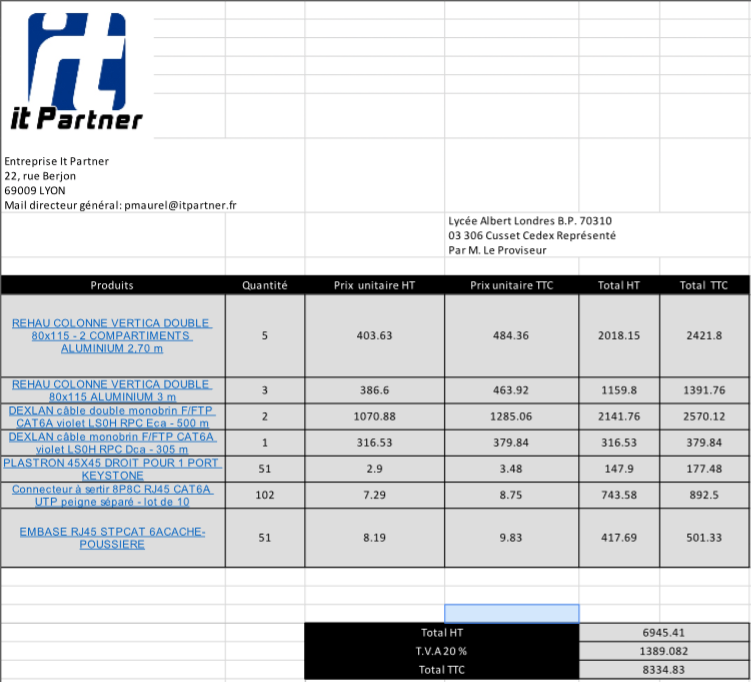
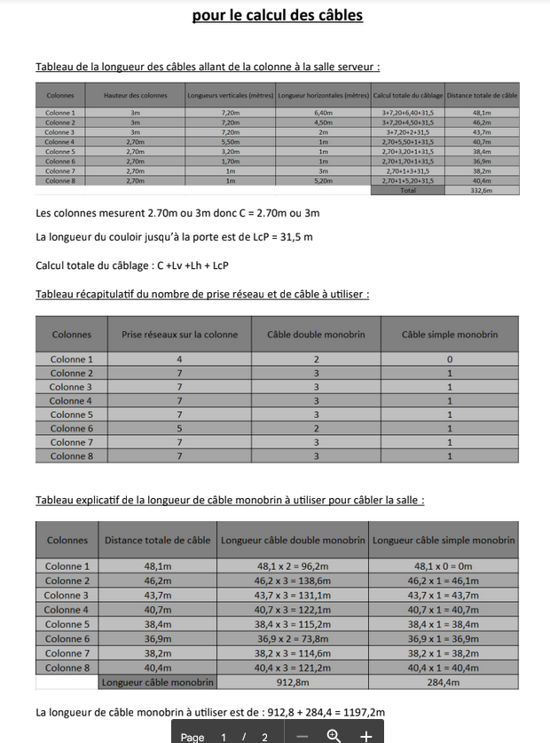
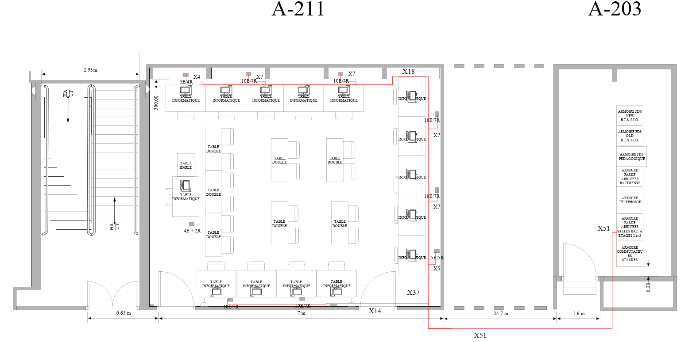

préparation mise en réseau d'une salle
Contexte :
Cet AP a été réalisé à 2 et nous avions comme objectifs :
- Analyser la salle
- Réaliser un plan de cablage
- Faire un devis des éléments nécessaire
- Réaliser une fiche avec les calculs réaliser
Nous étions des employés de chez IT Partner et nous devions faire un plan visio de la salle avec les tables et le nombre de port RJ45 et prise électrique avec le passage des câbles et l'emplacement des prises. Les composants nécessaires(colonne, câble, embase, plastron et connecteur) était trouvable sur le site de chez Abix. Pour pouvoir réaliser le devis il nous a fallu calculer les distances nécessaires pour le bon nombre de câble.



Environnement technologique :
- internet (site Abix)
- Microsoft (visio/ word / excel)
compétence mobilisée :
- B1.1.2 : Exploiter des référentiels, normes et standards adoptés par le prestataire informatique
Nous avons utilisé des câbles de catégorie récentes permettant un changement plus tardif si nécessaire et un grand nombre de prise(rj45 et électrique) pour permettre une évolution du nombre d'équipement.
- B1.2.2 : Répondre aux incidents et aux demandes d’assistance et d’évolution
Nous avons réalisé les plans de la salle comme demander en respectant le contrat demander.